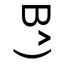

^^^ Me!
Hey! You've arrived at the personal site of Brian - yes, I am the ugly dude pictured above.
- I work for twoday. I am a branch development manager and my roles are ... everything development!
- Occassionally I do technical review on books from The Pragmatic Bookshelf (pragprog). I've done reviews on such diverse books as "Dart for Hipsters", "Create Mobile Games with Corona", "OpenGL ES 2 for Android" and a couple of iOS books.
- You can find me on LinkedIn and Github.
- Stuff: My Lab, Penguins, Phase 10 Score Card
- I run my own very small consultancy in my spare time (LDX, CVR 31649102) where I help selected clients with code and consulting.
Curriculum Vitae
Full CV can be send upon request - look me up on LinkedIn.
- Development Manager, twoday, 2022/10 -
- Head of Development / Product Owner. Lead for 2 teams - one team in Lithuania and one team in Denmark. Responsibilities include: supervising day to day development & operations. Secondary role as Product Owner for Addo Sign.
twoday is the old Visma Consulting (and others) in a new company.
- Development Manager, Visma Consulting, 2020/6 - 2022/10
- Head of Development / Product Owner. Lead for 2 teams - one team in Lithuania and one team in Denmark. Responsibilities include: supervising day to day development & operations. Secondary role as Product Owner for Addo Sign.
- CTO, esignatur, 2016/11 - 2020/5
- Ensuring the continued improvement of the esignatur digital signing solution.
- Lead Developer, esignatur, 2013/4 - 2016/11
- C#, MVC, Razor, Raven DB, Git + GitHub, PAdES, PDF, SDO, XMLDSIG, Signing, Software Architecture, Team City
- Developer, Telenor, 2011/7 - 2013/3
- C#, MVC, Razor, MS SQL 2008, Git, TDD, SBE
- Developer / Application Specialist, CDRator, 2009/9 - 2011/3
- Release Management, Subversion, Java, 118 service, impl. of Service Providers and training/education
- Senior Solution Architect, Capernow, 2008/5 - 2008/8
- Develop roadmap for iTSM product
- Solution Architect, Hewlett Packard, 2001/9 - 2008/4 and 2008/11 - 2009/8
- Virtualization, consolidation, solution architecture, workshop facilitation, "Driver for Linux", Technical Project Management, Developer on HP OpenView ServiceActivator
- Infrastructure Consultant, Compaq Computers, 1999/12 - 2001/8
- Unix/Linux infrastructure (firewalls, email gateways), Openwave KX/MX, Sendmail, Design and development of MTA gateway
- Developer/System Administrator, Fleggaard Dandata, 1996/6 - 1999/11
- Embedding AcuCobol in the Apache Webserver, data collection tools based on Datamate and Systel, Sysadmin on Linux and HP-UX